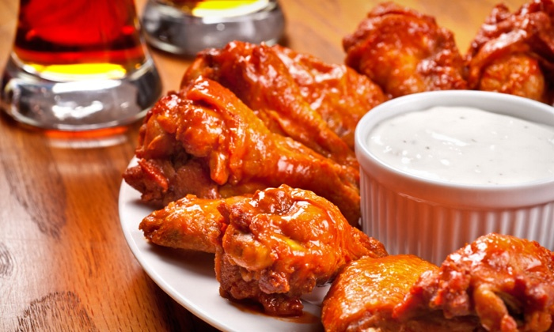
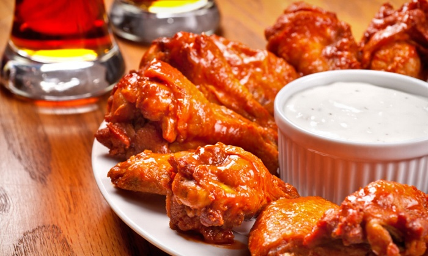

This page is about the absolute love for food. The temptations that you just can't keep to yourself. My favorite foods are already listed in the links below. Enjoy!
 Bacon
Bacon
First we have bacon, You can put bacon on anything and it will turn out to be amazing. Bacon makes everything better.
Mashed PotatoesMashed potatoes have been my favorite food since I can remember. Having homemeade mashed potatoes and gravy is a blessing.
CheeseEverything is better with cheese. If something is ever missing from your recipe I can believe that it is cheese.
 Buns
Buns
At the end of the day nothing is as good as a dessert than Cinnamon Buns. This recipe is the best one yet!
For the background pictureThis is the recipe and the steps on how to make the background picture. The Mashed Potatoe Bacon Bombs.
Here are some more of my favorite food that are easy to make!
 
